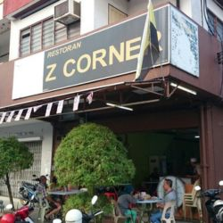
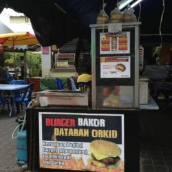
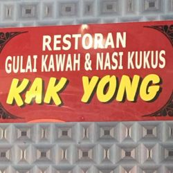

Interesting Food

Z CORNER
Z Corner restaurant is a modern Malaysia neighborhood restaurant in the Akhut to make some local southeastern Asian Kampong food. It always opens in Monday-Saturday from 7:15 a.m. - 13:00 p.m. It is in Jalan Pandak Akhat, Batu Gajah 31000, Malaysia.

BURGER BAKOR DATARAN ORKID
Burger Bakor Dataran Orkid is a modern western style restaurant to have some Europrean and American content fast food. It is in Jalan Orkid, Batu Gajah 31000, Malaysia.

RESTORAN GULAI KAWAH & NASI KUKUS
At Jalan pusin Gulai Kawasaki is a traditional Malay restaurant, but it can make some southeastern and eastern Asian kampong food. It is in Jalan Pusing, Batu Gajah 31000, Malaysia.